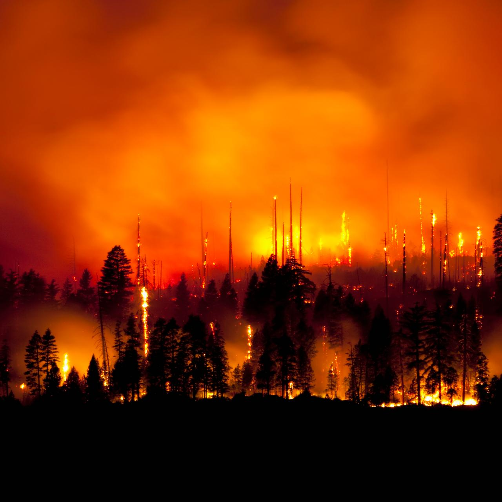

We only have one Earth. If we, as a world, do not come together and take action, we will lose our Home.

Per NASA's website there have been changes that are happening at a faster rate than scientists have predicted. Such as droughts, wildfires, and extreme rainfall.
Some changes will be irreverable over the next hundreds of thousands of years,which, may not sound like a big deal to some people but our jobs as humans are to protect our home and to make sure it will still be there for future generations.
The average temperature of the Earth raised 2 degrees Farenheit from 1850-1900 which is only 50 years. Scientists expect that the average temperature will raise 3 degrees Farenheit in the next few decades.
There are big changes happening before our eyes and we need to step in now to help prevent future damage.
Just One Ocean has identified three major problems that are effecting the oceans of the world.
Habitat distruction due to climate change: this includes rising sea levels due to melting ice.
Rising sea temperatures and pollution: Coming from greenhouse gases trapped in our atmosphere and water pollution from factories and more.
Over fishing and plastic pollution: Imbalancing the oceans eco system and killing ocean life with plastic waste.